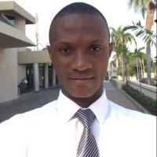
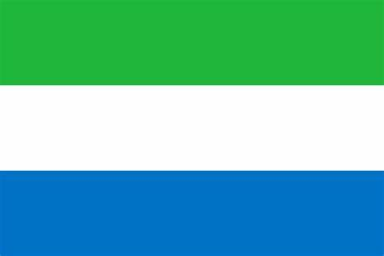

About Me

My name is Albert. I was born in a small town in Southern Sierra Leone, called Rotifunk. My family moved to Bo, sothern Sierra Leone when I was six months old, where I grew up to adulthood. Currently I live in Freetown. I am a project manager at a construction company. My passion for technology has led me on the path to study software development. I live with my wife and three kids.
Freetown, Sierra Leone

Freetown is little tropical paradise on the West coast of Africa. It is home to about one million people. The Atlantic ocean can be viewed from almost any section of the City. A key feature of Freetown is it whiote sandy beaches which stretch for miles.